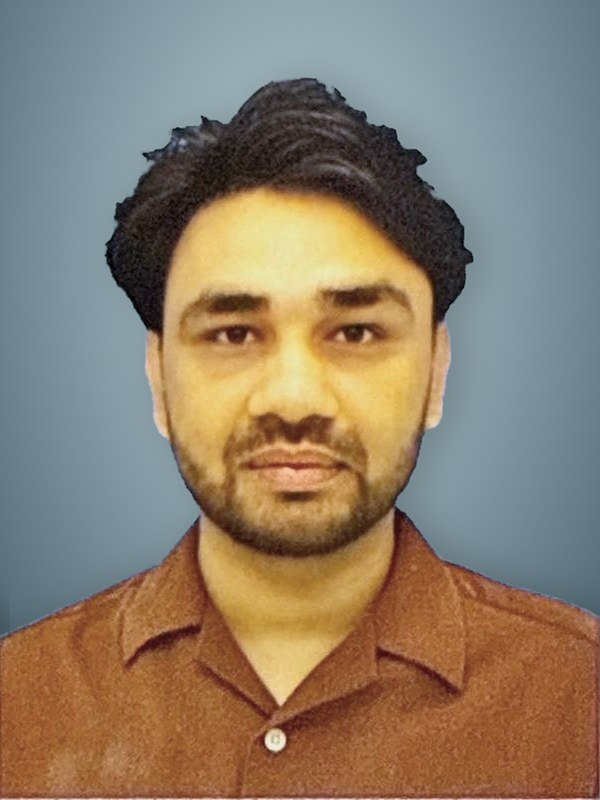

Curriculum vitae

Asad Razzaq, PhD
Specially-Appointed Researcher · NISAR Lab, Kyoto University of Advanced Science
asad.razzaq@kuas.ac.jpKyoto, Japan
About
Short bio
Asad Razzaq is a Specially-Appointed Researcher at the NISAR Lab, Kyoto University of Advanced Science (KUAS), Japan. He received his Ph.D. in Engineering from the University of Toyama in 2025 under Prof. Toshiyuki Yasuda, graduating as Vice Valedictorian, with a thesis on the evolutionary design of collective behavior for heterogeneous swarm robotic systems. His doctoral research, funded by a JST SPRING fellowship, evolved neural controllers together with team composition for cooperative transport and collective exploration. In 2025 he was a visiting Ph.D. student at IRIDIA, Université libre de Bruxelles, with Prof. Marco Dorigo. At KUAS he works on AI for multi-robot and human-machine systems, including medical robotics. He holds B.S. and M.S. degrees in Computer Science from Government College University Faisalabad, Pakistan.
Education
Degrees
- Oct 2022 – Sept 2025
Ph.D. in Engineering
University of Toyama, Japan · Dept. of Mechanical and Intellectual Engineering
Advisor: Prof. Toshiyuki Yasuda. Thesis: Evolutionary Design of Collective Behavior for Heterogeneous Swarm Robotic Systems. Vice Valedictorian.
- Apr 2022 – Oct 2022
- Aug 2017 – Mar 2020
M.S. in Computer Science
Government College University Faisalabad, Pakistan
Thesis: Impacts of Blockchain in Governance with Respect to Finance.
- Oct 2013 – Aug 2017
- 2009 – 2013
F.Sc. Pre-Engineering · Matriculation (Science)
Iqra College Sadiqabad · Bismillah Higher Secondary School, Sadiqabad, Pakistan
Experience
Research and industry
- Dec 2025 – now
Specially-Appointed Researcher
NISAR Lab, Dept. of Mechanical and Electrical Systems, Kyoto University of Advanced Science, Kyoto
Medical robotics, AI-powered human-machine systems, haptics, soft manipulators and actuators; AI and machine learning for multi-robot systems and autonomous exploration.
- Sept 2025
AI Systems Engineering Intern
Souya Corporation, Ishikawa, Japan
AI-driven software with deep learning and data analytics pipelines for enterprise clients; proof-of-concept design in Python.
- Mar 2025
Visiting Ph.D. Student
IRIDIA, Université libre de Bruxelles, Belgium
Supervised by Prof. Marco Dorigo, a pioneer of swarm intelligence. Blockchain for decentralized coordination, trust and data integrity in robot swarms.
- Oct 2022 – Sept 2025
Research Assistant
University of Toyama, Japan
Led research on evolutionary design of collective behavior in heterogeneous swarms; evolved and optimized neural controllers for cooperative transport and collective exploration.
- Apr 2020 – Mar 2022
IT Executive
Approsoft Web Development and Design, Faisalabad, Pakistan
Full-cycle web development projects and client software; communication between technical and non-technical teams.
Recognition
Awards and funding
- 2025
PhD Vice Valedictorian
University of Toyama. Awarded to the second-highest-ranking doctoral graduate of the year.
- 2023–2025
JST SPRING Doctoral Fellowship
Toyama University Next Generation Researchers Challenging Research Program, funded by JST SPRING (Grant JPMJSP2145). My SPRING fellow profile.
- 2025
SWARM 2025 Travel Grant
Selected for a travel grant to present at SWARM 2025 in Germany.
- 2024
Outstanding Student Award
Society of Instrument and Control Engineers (SICE), Hokuriku Branch, Japan, for academic and research achievement.
- 2019
Prime Minister's Laptop Scheme
Merit-based award, Government of Pakistan, for high-achieving university students.
Skills
Tools, languages and teaching
Robotics and simulationROS / ROS 2, Gazebo, Isaac Sim, Isaac Lab, MuJoCo, Genesis, Drake, V-Rep, Unity
AI and programmingPython, C/C++, C#, MATLAB, JavaScript, LaTeX · PyTorch, TensorFlow, CUDA, OpenCV, Git
Medical AIMONAI, OpenSlide
HardwareRaspberry Pi, Arduino, BeagleBone, UDOO, Pixhawk / ArduPilot, Mission Planner, DJI Mavic, Parrot Bebop · Eagle, Altium Designer
LanguagesEnglish (proficient, C1) · Japanese (basic, N5) · Urdu (native)
Teaching and mentoringB.Ed. (teaching degree). Guided undergraduate students in research and experimental methods at the University of Toyama.
ServiceTalks on careers, graduate study and scholarships for Pakistani student communities, 2022 – present.
ReferencesAvailable on request.
Profiles